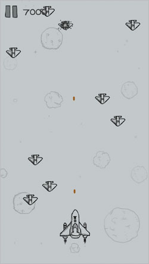
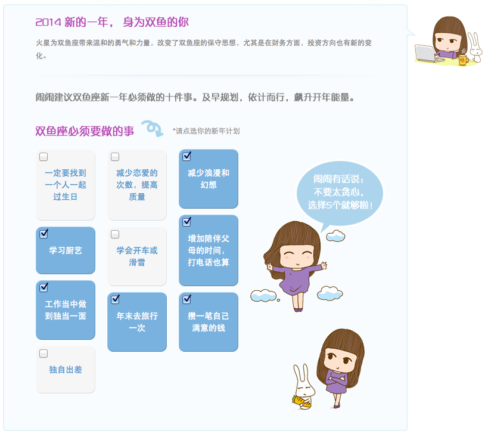

1月
Spark Pay iPad版紧张研发
2月
农历春节，过一个好年
3月
为Spark Pay的第一次上线冲刺
4月
上线后的忙碌
5月
集成全新外设
6月
一切步入正轨
7月
新成员的加入
8月
无障碍使用
9月
全新挑战，引入大量新功能
10月
推迟一个月，终于发布
11月
更换内核，实现下一次腾飞
12月
又至岁末，平稳的一年


- 讲得一口流利的英语
- 能看见明显的腹肌
- 体重控制于65公斤并保持
- 练就一副好歌喉
- 把CopoBlog做完
- 开发一套对工作有作用的软件
- 办10次Training
- 重读一遍宇宙简史
- 了解量子物理学